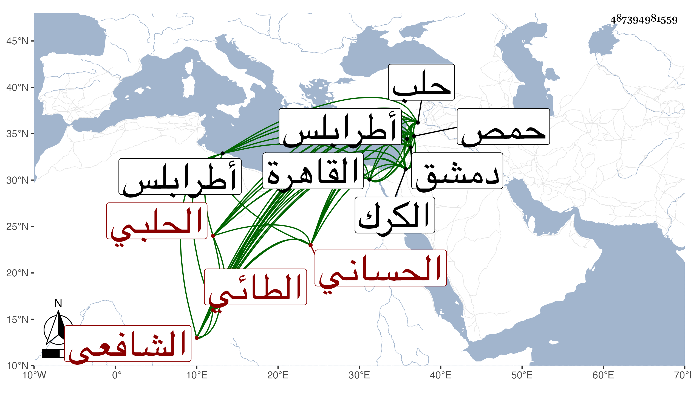

0902Sakhawi.DawLamic.ITO20230111-ara1.EIS1600.487394981559
Biography ID: 487394981559
628
مسعود بن شعبان بن إسماعيل بن عبد الرحمن بن إسماعيل بن مسعود ابن علي بن محمد بن عبيد بن هبة الله الشرف أبو عبد الله الحساني الطائي الحلبي الشافعي . قال شيخنا في إنبائه : أصله من دير حسان ونشأ فتفقه قليلا ثم صار ينوب في أعمال البر عن القضاة ثم ولي قضاء حلب عوضا عن ابن أبي الرضي ثم عزل ثم أعيد ثم عزل بابن مهاجر سنة تسعين وسبعمائة ثم ولاه الشهاب الزهري قضاء حمص ، وكان جاهلا مقداما يعرف طرق السعي وله دربة في الأحكام واشتهر بأخذ المال من الخصوم فحكى لي نائب الحكم جمال الدين بن العراقي الحلبي وكان خصيصا به أنه أوصاه أن لا يأخذ من أحد من الخصمين إلا من يتحقق أنه الغالب وسار مع كمشبغا لما توجه للظاهر عند خروجه من الكرك فلم يزل صحبة الظاهر إلى أن دخل القاهرة فرعى له ذلك فلما استقرت قدمه في الملك ولاه قضاء دمشق بعد قضاء حمص وكذا ولي في الفتنة أيضا قضاء دمشق وغيرها وتنقل في الولايات إلى أن استقر بطرابلس ومات بها في رمضان سنة تسع قال العلاء بن خطيب الناصرية بعد أن عزل ولكن لم يبلغه ذلك ظنا قال وكان رئيسا كريما محتشما عنده مكارم أخلاق ومداراة للدولة ومحبة للعلماء وأنشد عنه نظما لغيره .
